Префектура Эхимэ · Сайдзё · еда
Воздушный рис из Сайдзё: лавка «Хинаноя» и её сладости из местного риса
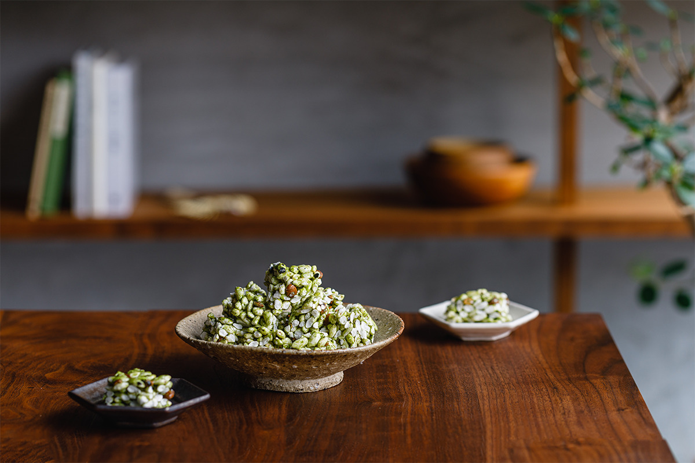
В городе Сайдзё воздушный рис превращают в современные сладости: к местному зерну добавляют цитрусы, маття и тростниковый сахар. Здесь же родилась традиция дарить такие сладости на свадьбу.
Место
Рисовые поля у горы Исидзути
Сайдзё называют житницей Эхимэ. Город стоит на воде с горы Исидзути, самой высокой в Западной Японии, и летом окрестности заливают светло-зелёные рисовые поля.
Здесь издавна повелось дарить на свадьбу воздушный рис. В восточной части Эхимэ до сих пор готовят пон-каси из местного зерна и преподносят его гостям: так желают молодым здоровья и делятся с ними удачей.
Лавка «Хинаноя» открылась в ноябре 2010 года. Её основатель взял местное зерно и превратил старое деревенское лакомство в современный бренд: с аккуратной упаковкой, ровными вкусами и постоянной линейкой примерно из десяти сортов. Воздушный рис делают из риса, поэтому сладости получаются без глютена.
Производство
Рис, сахар и пар
Главное сырьё закупают целиком у местных фермеров по договору: берут только свежий рис нового урожая и хранят его в холодильных камерах, чтобы зерно не теряло свежесть.
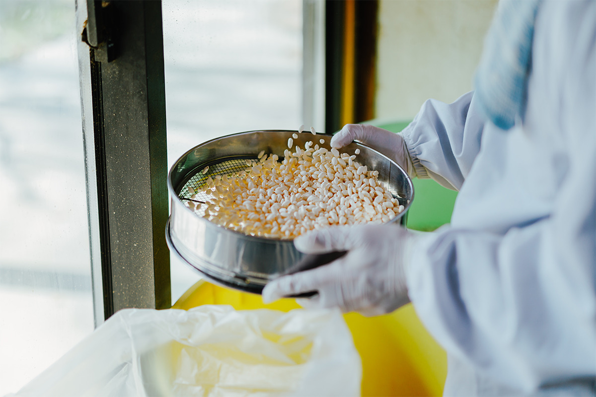
Зерно засыпают в аппарат, и под давлением оно превращается в хрустящие шарики. В момент, когда открывают камеру, наружу вырывается облако пара, а готовые зёрна с грохотом летят в сетчатую корзину.
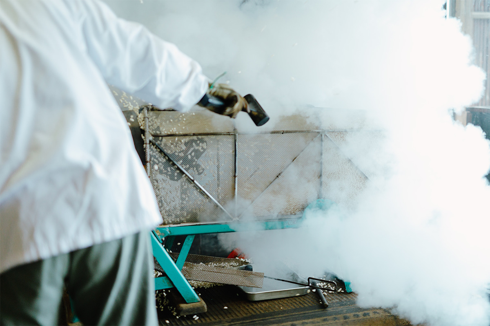
В лавке признаются: гнаться за словами «местное» и «органическое» легко, но тогда на второй план уходит главное. Поэтому здесь прежде всего следят за тем, чтобы сладости были вкусными, и берут хорошие продукты и в Японии, и за её пределами. Из местного особенно гордятся цукатами из иёкана (эхимского цитруса) и маття из Сингу, горной деревни в глубине провинции Иё.
Признание
Сладости из Сайдзё в Aman Tokyo
Пон-каси с иёканом с самого открытия отеля Aman Tokyo в 2014 году входит в наборы для гостей. В отеле выбрали сладости, которых не найти в других гостиницах: их связь с японской традицией понятна, а способ приготовления для многих остаётся загадкой.
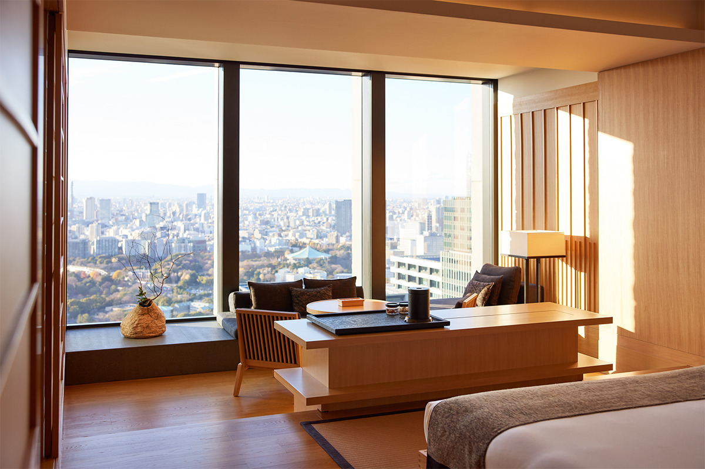
Гостям отеля сладости пришлись по вкусу: многие покупают их и после поездки, чтобы повторить вкус дома.
Сорта
Что стоит попробовать
Линейка небольшая, но у каждого сорта свой характер. Ниже четыре самых известных.
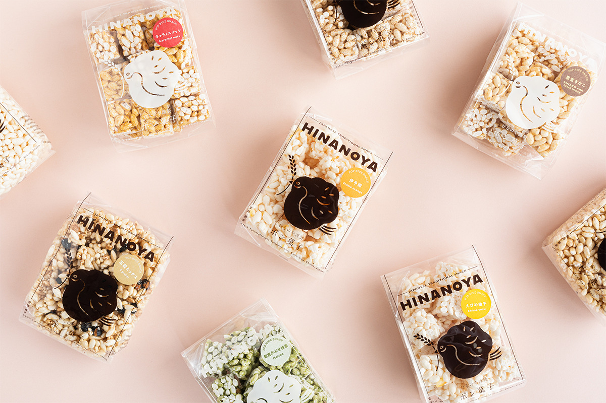
«Карамель с орехами»
Жареный миндаль смешивают с домашней карамелью и получают сладость с горчинкой и мягкой сладостью.
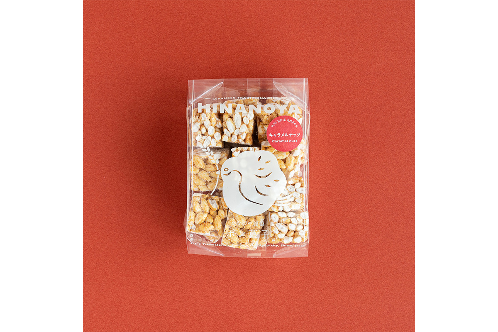
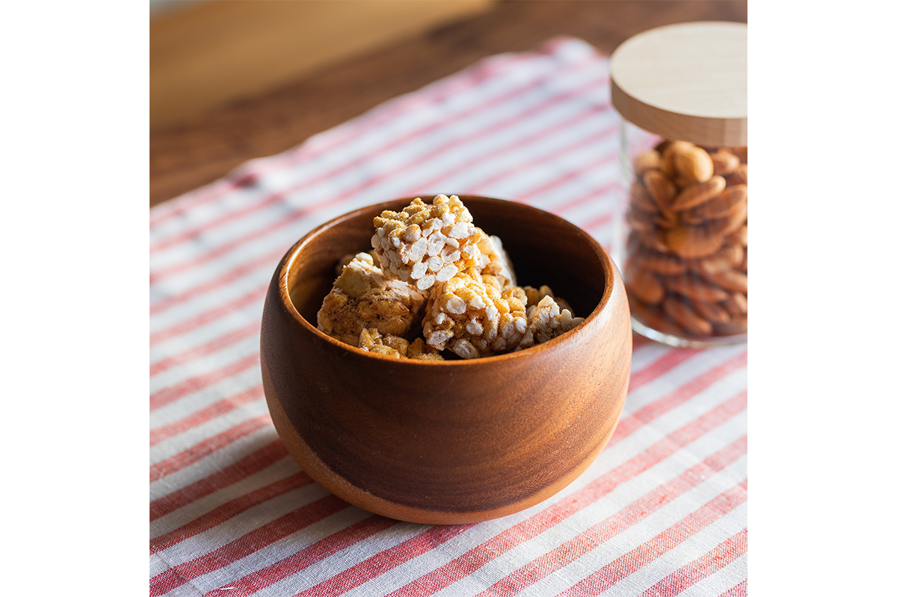
«Иёкан»
Для этого сорта берут отборные цукаты из эхимского иёкана. Сладость воздушного риса и кислинка цитруса дают свежий вкус, за которым возвращаются снова.
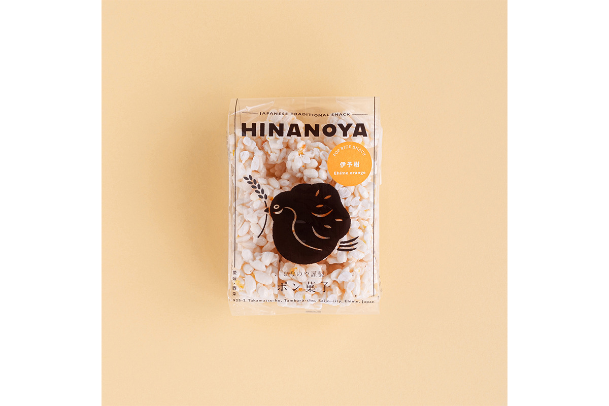
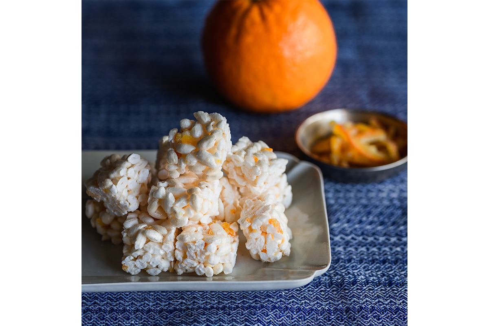
«Бурый рис с тростниковым сахаром»
Здесь соединились аромат бурого риса и мягкая сладость тростникового сахара. Простой вкус нравится и детям, и взрослым.
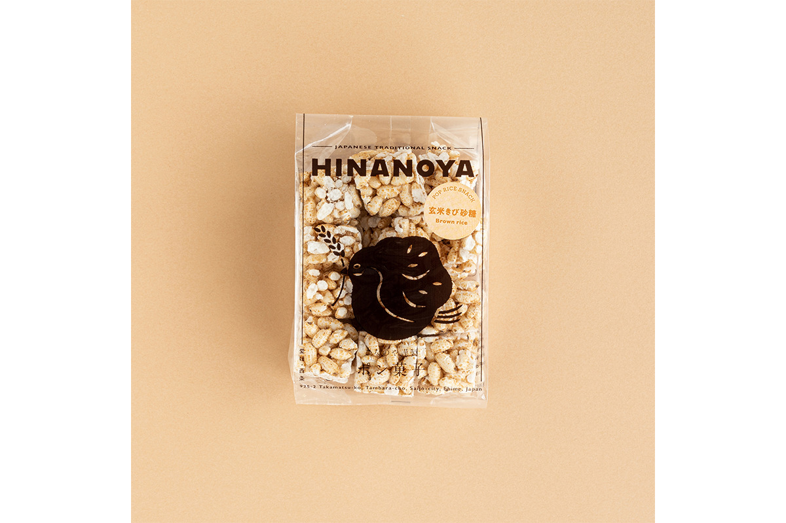
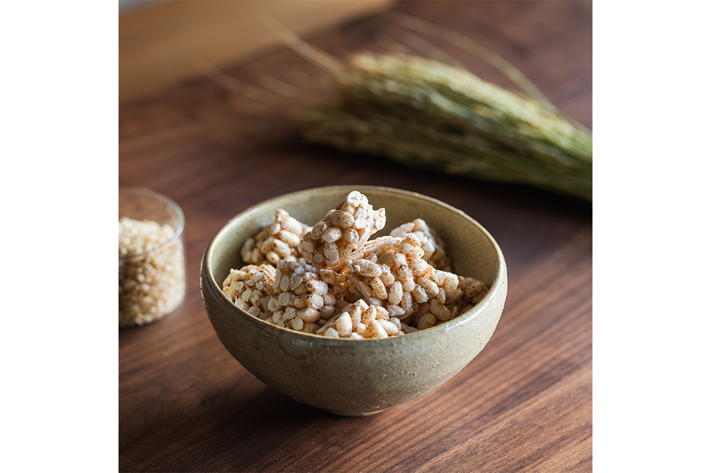
«Маття из Сингу»
Этот сорт делают с апреля по август. Сладость здесь сдержанная, к аромату маття добавляется жареный соевый кинако. Маття привозят из Сингу, а сою обжаривают в том же аппарате для воздушного риса и мелют крупно.
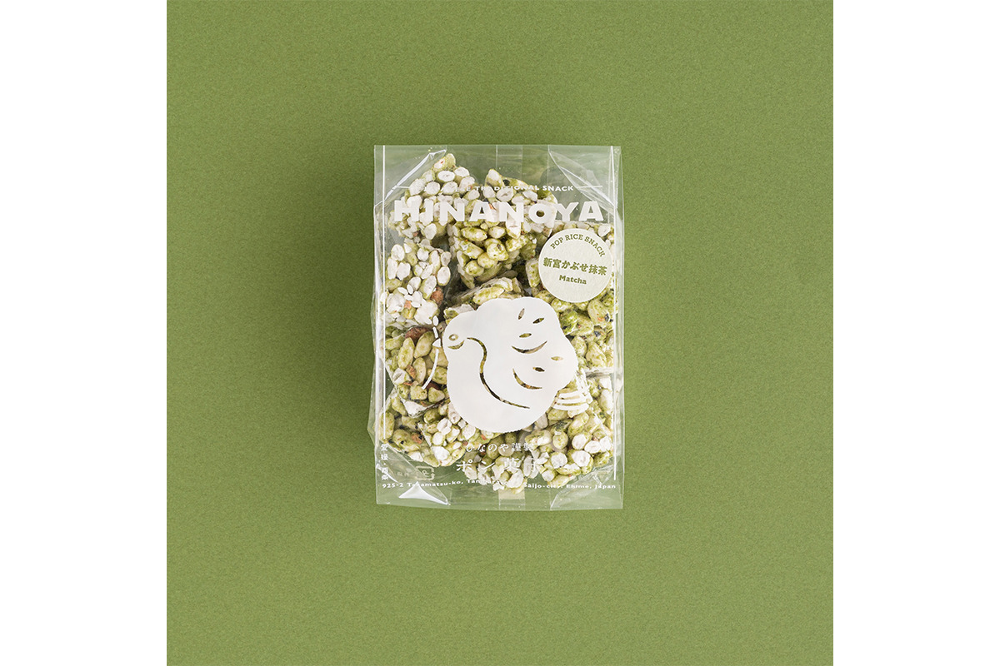
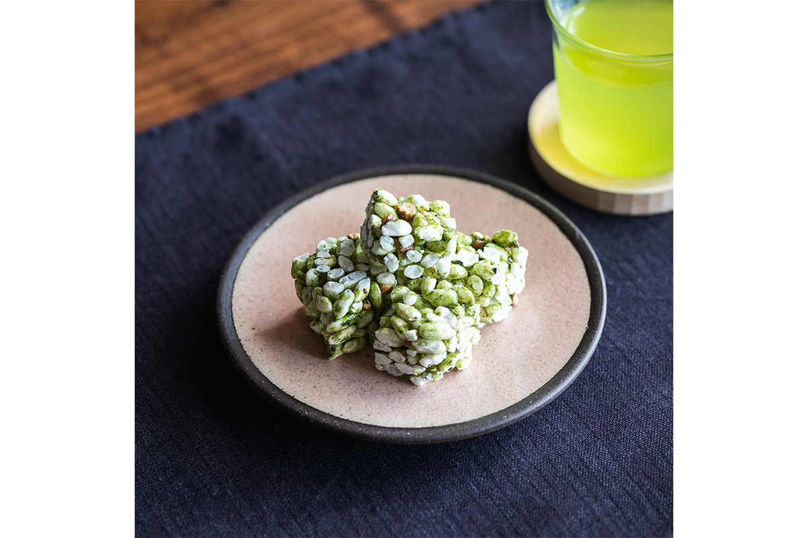
Кроме отдельных сортов в лавке собирают подарочные наборы и свадебные сувениры, а летом к ним добавляют желе из эхимских мандаринов.
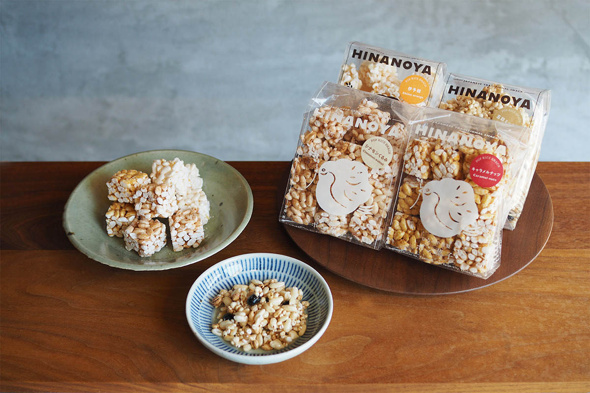
Хинаноя, магазин у станции Нюгава
- Адрес
- префектура Эхимэ, Сайдзё, Мицуя-Минами, 11-9
- Телефон
- +81 898-35-5628
- Часы работы
- 10:00–18:00
- Выходные
- воскресенье и праздники
- Цены
- пон-каси 486 иен за упаковку
- Сайт
- hinanoya.co.jp
Фото: Юдзи Ёсикава.